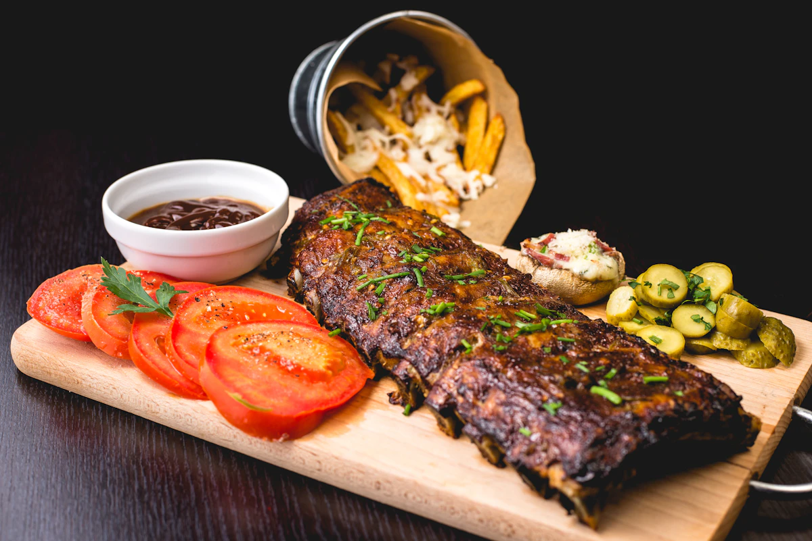

sabor-e-brasa.demo/cardapio

Sabor & Brasa — Gastronomia Autoral
Plataforma digital para restaurante contemporâneo que substitui cardápios em PDF lentos por uma experiência fotográfica interativa, apetitosa e imediata no celular.
Objetivo & Solução: Reduzir atrito na escolha de pratos e reservas de mesa com busca sem acentos, filtros combinados por dieta (vegetariano, vegano, sem glúten) e galeria lightbox acessível.